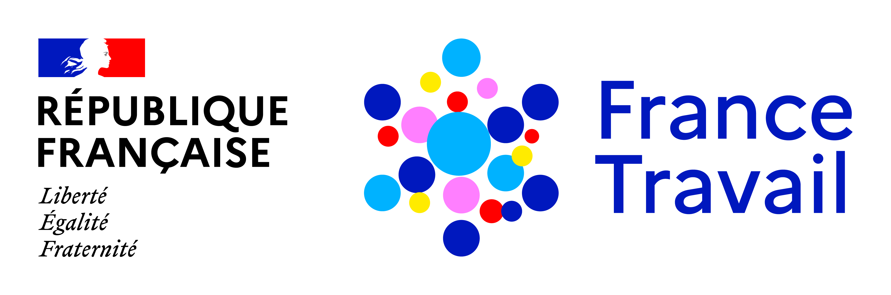

<!DOCTYPE html>
<html lang="fr">
<head>
    <meta charset="UTF-8">
    <meta name="viewport" content="width=device-width, initial-scale=1.0">
    <title>Outil Conseiller - Projet Professionnel</title>
    
    <script crossorigin src="https://cdnjs.cloudflare.com/ajax/libs/react/18.2.0/umd/react.production.min.js"></script>
    <script crossorigin src="https://cdnjs.cloudflare.com/ajax/libs/react-dom/18.2.0/umd/react-dom.production.min.js"></script>
    <script src="https://cdnjs.cloudflare.com/ajax/libs/babel-standalone/7.23.5/babel.min.js"></script>
    <script src="https://cdn.tailwindcss.com"></script>
    
    <link rel="stylesheet" href="https://cdnjs.cloudflare.com/ajax/libs/font-awesome/6.4.0/css/all.min.css">
    <link href="https://fonts.googleapis.com/css2?family=Inter:wght@300;400;500;600;700;800&display=swap" rel="stylesheet">

    <script>
        tailwind.config = {
            theme: {
                extend: {
                    fontFamily: { sans: ['Inter', 'marianne'] },
                    colors: {
                        ft: { blue: '#252e6f', red: '#e1000f', light: '#f2f6fa' }
                    }
                }
            }
        }
    </script>

    <style>
        body { font-family: 'Inter', sans-serif; background-color: #f8fafc; }
        ::-webkit-scrollbar { width: 6px; }
        ::-webkit-scrollbar-track { background: transparent; }
        ::-webkit-scrollbar-thumb { background: #cbd5e1; border-radius: 10px; }
        ::-webkit-scrollbar-thumb:hover { background: #94a3b8; }
        .animate-fade-in { animation: fadeIn 0.4s ease-out forwards; }
        @keyframes fadeIn { from { opacity: 0; transform: translateY(15px); } to { opacity: 1; transform: translateY(0); } }
        
        /* Styles spécifiques pour les outils */
        .tool-link { transition: all 0.2s; border-left-width: 4px; }
        .tool-link:hover { transform: translateX(2px); box-shadow: 0 4px 6px -1px rgba(0, 0, 0, 0.1); }
        .tool-static { border-left: 3px solid #cbd5e1; background-color: #f1f5f9; opacity: 0.8; }
    </style>
</head>
<body class="bg-slate-50 text-slate-900 h-screen overflow-hidden flex flex-col">

    <div id="root" class="h-full flex flex-col"></div>

    <script type="text/babel">
        const { useState, useEffect, useMemo, useRef } = React;

        // --- COMPOSANT UTILITAIRE POUR LES ICONES ---
        const DynamicIcon = ({ icon, className = "" }) => {
            const isUrl = icon.startsWith('http') || icon.startsWith('/') || icon.startsWith('data:');
            if (isUrl) {
                return ;
            }
            return <i className={`${icon} ${className}`}></i>;
        };

        // --- DONNÉES ---
        const DATA = {
            situation_globale: {
                id: 'situation_globale', pillar: "1. MON DIAGNOSTIC", title: "Ma Situation Globale", icon: "fa-solid fa-user-doctor", color: "text-purple-600", bg: "bg-purple-50", border: "border-purple-200", 
                description: "Santé, famille, disponibilité, freins et leviers personnels.",
                subsections: [
                    { title: "Santé & Handicap", icon: "fa-solid fa-notes-medical", questions: [
                        "Bénéficiez-vous d'une reconnaissance travailleur handicapé (RQTH) ou d'un statut DEBOE ?",
                        "Avez-vous des contre-indications (postures, environnements, allergies) à prendre en compte ?",
                        "Avez-vous des restrictions médicales concernant certains types de postes ?",
                        "Votre couverture santé est elle à jour (Sécurité Sociale, Mutuelle) ?",
                        "Votre santé permet-elle une reprise d'activité immédiate ?",
                        "Vos problématiques de santé risquent-elles d'entraîner des absences régulières ?",
                        "Avez-vous un dossier en cours ou déjà validé auprès de la MDPH ?",
                        "Comment intégrez-vous votre situation de santé dans votre parcours professionnel ?"
                    ], tools: [{ label: "Cap Emploi", url: "https://www.capemploi.net/" }, { label: "Prestation PAS", url: "https://travail-emploi.gouv.fr/la-prestation-dappuis-specifiques" }, { label: "Dépasser mon handicap dans mon projet pro", url: "#" }, { label: "Regards Croisés", url: "https://florentboutreux.github.io/monprojetprofessionnel/regardscroisées.pdf" }, { label: "Accompagnement LUA", url: "https://florentboutreux.github.io/monprojetprofessionnel/LUA.pdf" }] },

                    { title: "Famille & Contraintes", icon: "fa-solid fa-people-roof", questions: [
                        "Quelle est votre commune de résidence ?",
                        "Quelle est votre situation familiale actuelle (composition du foyer) ?",
                        "Quelles sont vos obligations personnelles ou familiales prioritaires ?",
                        "Quelle est votre situation financière (type d'allocation, durée des droits) ?",
                        "Bénéficiez-vous du soutien de votre entourage dans la réalisation de votre projet ?",
                        "Avez-vous la charge d'enfants ou de proches en situation de handicap ?",
                        "Quelles sont vos contraintes horaires quotidiennes ?",
                        "Avez-vous un rôle d'aidant familial pour un proche ?",
                        "Disposez-vous d'une solution de garde stable pour vos enfants de moins de 3 ans ?",
                        "Votre situation actuelle favorise-t-elle vos démarches (isolement, réseau) ?"
                    ], tools: [{ label: "Aide Garde d'Enfant", url: "https://www.francetravail.fr/candidat/en-formation/les-dispositifs/formation---laide-a-la-garde-den.html" }, { label: "Mes Aides", url: "https://mes-aides.francetravail.fr/" }, { label: "GMO Métiers/Loisirs", url: "monprojetprofessionnel/Trouverdesmétiersàpartirdesesloisirsetdesonentouragep116-126.PDF" }] },

                    { title: "Disponibilité", icon: "fa-solid fa-clock", questions: [
                        "Combien de temps pouvez-vous consacrer à votre projet chaque semaine ?",
                        "Quels sont vos autres engagements (personnels, familiaux, professionnels) susceptibles d’influencer cette disponibilité ?​",
                        "Ce projet de changement professionnel fait-il partie de vos priorités immédiates ?",
                        "Comment comptez-vous vous organiser pour libérer du temps pour vos démarches ?",
                        "Avez-vous l'énergie et la charge mentale nécessaires pour vous impliquer pleinement ?",
                        "Quels sont les leviers qui boostent votre motivation ou, au contraire, les freins redoutés ?"
                    ], tools: [{ label: "Atelier Organiser ma recherche d'emploi", url: "https://messervices.francetravail.fr/centre-interet/organiser-et-optimiser-ma-recherche-demploi" }] }
                ]
            },

            mobilite: {
                id: 'mobilite', pillar: "1. MON DIAGNOSTIC", title: "Mes Freins Mobilité", icon: "fa-solid fa-route", color: "text-purple-600", bg: "bg-purple-50", border: "border-purple-200",
                description: "Transport, logement et périmètre géographique.",
                subsections: [
                    { title: "Transport", icon: "fa-solid fa-bus", questions: [
                        "Quel est votre mode de déplacement principal au quotidien ?",
                        "Quel périmètre géographique pouvez-vous couvrir pour une formation ou un emploi ?",
                        "Connaissez-vous les réseaux et dispositifs de transport disponibles sur votre secteur ?",
                        "Avez-vous besoin d'informations sur les aides au permis ou aux frais de transport ?"
                    ], tools: [{ label: "Bilan Mobilité", url: "https://www.mobilite-lozere.fr/" }, { label: "Rome2Rio", url: "https://www.rome2rio.com/" }, { label: "Aide permis B", url: "https://www.francetravail.fr/candidat/vos-recherches/les-aides-financieres/aide-a-lobtention-du-permis-de-c.html" }, { label: "DORA", url: "https://dora.inclusion.beta.gouv.fr/" }, { label: "Resea MIO", url: "https://www.reseau-mio.fr/" }, { label: "Solidari'o", url: "https://www.lio-occitanie.fr/titres-et-tarifs/tarif-solidarite/" }, { label: "Transport à la demande", url: "https://www.cc-millaugrandscausses.fr/mon-quotidien/mobilites-a-la-carte/transport-a-la-demande" }, { label: "Mobilité à la carte", url: "https://www.cc-millaugrandscausses.fr/mon-quotidien/mobilites-a-la-carte" }] },

                    { title: "Logement", icon: "fa-solid fa-house", questions: [
                        "Quelle est votre situation d'hébergement actuelle (locataire, propriétaire, hébergé) ?",
                        "La mise en œuvre  de votre projet nécessite-t-elle un nouveau logement (formation éloignée) ?",
                        "Avez-vous identifié des solutions d'hébergement temporaires si nécessaire ?",
                        "Seriez-vous disposé(e) à envisager un déménagement pour occuper un nouvel emploi ?",
                        "Connaissez-vous les aides liées à la mobilité ou les dispositifs de déductions fiscales associés ?"
                    ], tools: [{ label: "Action Logement", url: "https://www.actionlogement.fr/" }, { label: "CAF", url: "https://www.caf.fr/" }, { label: "Aide Mobilité", url: "https://www.service-public.gouv.fr/particuliers/vosdroits/F1011" }, { label: "Alloc Jeunes", url: "https://www.francetravail.fr/candidat/mes-droits-aux-aides-et-allocati/allocations-et-aides--les-repons/aides-pour-les-jeunes-en-accompa.html" }, { label: "Aide Millau", url: "https://www.millau.fr/vie-quotidienne/solidarite-et-sante/le-centre-communal-daction-sociale" }] }
                ]
            },

            bagage: {
                id: 'bagage', pillar: "1. MON DIAGNOSTIC", title: "Mon Bagage (CV)", icon: "fa-solid fa-suitcase", color: "text-indigo-600", bg: "bg-indigo-50", border: "border-indigo-200",
                description: "Compétences, expériences et historique.",
                subsections: [
                    { title: "Compétences", icon: "fa-solid fa-file-lines", questions: [
                        "Quel est votre parcours professionnel, extra-professionnelles ? ",
                        "Quelles sont vos principales compétences et vos qualités personnelles utiles pour votre projet professionnel ? ",
                        "Avez-vous des centres d'intérêt ou des passions qui pourraient être des atouts dans un cadre professionnel ? ",
                        "Avez-vous déjà évalué votre niveau de compétences numériques, par exemple via des plateformes comme PIX Emploi ? ",
                        "Quelles actions, telles que des formations ou des prestations, avez-vous déjà réalisés avec France Travail dans le cadre de votre accompagnement ? ",
                    ],
                    tools: [
                          { label: "Atelier CV et compétences", url: "https://messervices.francetravail.fr/centre-interet/faire-le-point-sur-mes-competences-professionnelles-et-concevoir-un-cv-percutant" },
                          { label: "Mes compétences", url: "https://mescompetences.info/" },
                          { label: "Passeport orientation", url: "https://www.francetravail.fr/candidat/votre-projet-professionnel/definir-votre-projet-professionn/le-passeport-orientation-formati.html" },
                          { label: "Activ'Projet", url: "https://www.francetravail.fr/candidat/votre-projet-professionnel/definir-votre-projet-professionn/activprojet.html" },
                          { label: "Pix Emploi", url: "https://pix.fr/pix-emploi " },
                          { label: "Outil analyse des compétences IA", url: "https://florentboutreux.github.io/outilanalysecompetences/" }
                      ]
                    }
                ]
            },

            exploration: {
                id: 'exploration', pillar: "2. MON CAP", title: "Exploration", icon: "fa-solid fa-compass", color: "text-cyan-600", bg: "bg-cyan-50", border: "border-cyan-200",
                description: "Identifier pistes et limites.",
                subsections: [
                    { title: "Mes aspirations et limites", icon: "fa-solid fa-shuffle", questions: [
                        "Quels métiers ou tâches quotidiennes ne souhaitez-vous absolument plus exercer ?",
                        "Quelles sont les activités (pro ou extra-pro) qui vous procurent le plus de satisfaction ?",
                        "Avez-vous identifié des limites claires (horaires, santé, environnement) à ne pas dépasser ?",
                        "Quel serait votre environnement de travail idéal (extérieur, bureau, équipe, autonomie) ?",
                        "Quelles sont les valeurs essentielles que vous souhaitez retrouver dans votre futur job ?",
                        "Comment décririez-vous vos conditions de travail idéales (rythme, relations hiérarchiques) ?"
                    ], tools: [{ label: "Explorama", url: "https://lexplorama.fr/outil-en-ligne" }, { label: "Atelier CV et compétences", url: "https://messervices.francetravail.fr/centre-interet/faire-le-point-sur-mes-competences-professionnelles-et-concevoir-un-cv-percutant" }, { label: "Activ'projet", url: "https://www.francetravail.fr/candidat/votre-projet-professionnel/definir-votre-projet-professionn/activprojet.html" }, { label: "Projet Pro", url: "https://maforpro-occitanie.fr/projet-pro" }, { label: "Psy du travail", url: "https://florentboutreux.github.io/monprojetprofessionnel/psychologuedutravail.pdf" }, { label: "Bilan compétences", url: "https://www.francetravail.fr/candidat/votre-projet-professionnel/evaluer-vos-competences/le-bilan-de-competences.html" }, { label: "Atelier Construire Mon projet pro", url:"https://messervices.francetravail.fr/centre-interet/construire-et-affiner-mon-projet-professionnel-au-regard-du-marche-du-travail " }, { label: "MOOC Projet", url: "https://www.emploi-store.fr/portail/services/construireSonProjetProfessionnel " }, { label: "MOOC Focus", url: "https://www.emploi-store.fr/portail/services/focusCompetences" }, { label: "Onisep", url: "https://www.onisep.fr/" }, { label: "Mes compétences", url: " https://mescompetences.info/" }, { label: "Questionnaire Préférences", url: "https://florentboutreux.github.io/monprojetprofessionnel/questionnairedepréférencespro.pdf" }, { label: "Questionnaire Valeurs", url: "https://florentboutreux.github.io/monprojetprofessionnel/LesvaleursdetravailGMP.pdf" }, { label: "Cartes métiers", url: "https://florentboutreux.github.io/monprojetprofessionnel/TrouverdesidéesdemétiersaveclescartesmétiersGMO.pdf" }, { label: "IPPE", url: "https://florentboutreux.github.io/monprojetprofessionnel/LequestionnairedesintérêtsprofessionnelsPôleEmploiIPPEGMO.pdf" }, { label: "Grilles hiérarchisations", url: "https://florentboutreux.github.io/monprojetprofessionnel/GrilledehierarchisationGMO.pdf" }, { label: "Grilles auto-positionnement", url: "https://florentboutreux.github.io/monprojetprofessionnel/questionnairesdautopositionnement.pdf" }, { label: "Enquêtes mêtiers", url: "https://florentboutreux.github.io/monprojetprofessionnel/Enquetemetier.pdf" }, { label: "Immersion", url: "https://immersion-facile.beta.gouv.fr/" }, { label: "Vidéos FT", url: "https://www.youtube.com/user/poleemploi" }] },
                ]
            },

            validation: {
                id: 'validation', pillar: "2. MON CAP", title: "Validation idée", icon: "fa-regular fa-lightbulb", color: "text-cyan-600", bg: "bg-cyan-50", border: "border-cyan-200",
                description: "Vérifier faisabilité.",
                subsections: [
                    { title: "Analyse Métier", icon: "fa-solid fa-magnifying-glass", questions: [
                        "Comment est née cette idée de métier ?",
                        "Quelle connaissance avez-vous des conditions réelles d'exercice ?",
                        "Savez-vous si une formation est obligatoire pour accéder à ce poste ?",
                        "Quels sont les avantages et inconvénients majeurs que vous avez identifiés ?",
                        "Quelles sont les qualités requises ? En possédez-vous déjà une partie ?",
                        "Ce métier répond-il à votre besoin d'utilité ou de sens ?",
                        "Avez-vous déjà rencontré des professionnels du secteur pour en discuter ?",
                        "Avez-vous identifié des obstacles potentiels à la réussite de ce projet ?"
                    ], tools: [{ label: "Fiches Rome", url: "https://candidat.francetravail.fr/metierscope/" }, { label: "Immersion", url: "https://immersion-facile.beta.gouv.fr/" }, { label: "Enquêtes mêtiers", url: "https://florentboutreux.github.io/monprojetprofessionnel/Enquetemetier.pdf" }, { label: "Vidéos Onisep", url: "https://oniseptv.onisep.fr/" }] }
                ]
            },

            adequation: {
                id: 'adequation', pillar: "2. MON CAP", title: "Marché & Territoire", icon: "fa-solid fa-map-location-dot", color: "text-teal-600", bg: "bg-teal-50", border: "border-teal-200",
                description: "Opportunités locales.",
                subsections: [
                    { title: "Opportunités", icon: "fa-solid fa-shop", questions: [
                        "Existe-t-il des offres d'emploi sur ce métier dans votre zone géographique ?",
                        "Avez-vous évalué la tension du marché (nombre de candidats vs nombre d'offres) ?",
                        "Savez-vous quels sont les employeurs qui recrutent activement dans ce domaine ?",
                        "Quels sont les secteurs porteurs sur votre territoire actuellement ?",
                        "Avez-vous déjà un réseau de professionnels ou d'entreprises à solliciter ?"
                    ], tools: [{ label: "Atelier Construire Mon projet pro", url:"https://messervices.francetravail.fr/centre-interet/construire-et-affiner-mon-projet-professionnel-au-regard-du-marche-du-travail" }, { label: "Observatoire de l'emploi", url: "https://www.observatoire-emploi-occitanie.fr/" }, { label: "Météo Emploi", url: "https://www.francetravail.fr/region/occitanie/meteo-de-lemploi.html" }, { label: "Echanges CDE", url: "#" }, { label: "Agences Intérim", url: "https://florentboutreux.github.io/monprojetprofessionnel/InterimsudAveyron.pdf" }, { label: "ZOOM Z08", url: "#" }, { label: "ALEXANDRIE", url: "#" }, { label: "Mes événements", url: "https://mesevenementsemploi.francetravail.fr/" }, { label: "DARES", url: "https://dares.travail-emploi.gouv.fr/" }, { label: "Enquête mêtier", url: "https://florentboutreux.github.io/monprojetprofessionnel/Enquetemetier.pdf" }, { label: "Immersion", url: "https://immersion-facile.beta.gouv.fr/" }] }
                ]
            },

            formation: {
                id: 'formation', pillar: "3. MA STRATÉGIE", title: "Formation", icon: "fa-solid fa-graduation-cap", color: "text-red-600", bg: "bg-red-50", border: "border-red-200",
                description: "Choix et financement.",
                subsections: [
                    { title: "Choix", icon: "fa-solid fa-signs-post", questions: [
                        "La formation est-elle réellement indispensable pour convaincre les recruteurs ?",
                        "Pourquoi avez-vous choisi spécifiquement cet organisme de formation ?",
                        "Avez-vous les prérequis techniques pour intégrer ce cursus de formation ?",
                        "Avez-vous comparé le contenu, la durée et le coût avec d'autres organismes de formation ?",
                        "Si la formation est à distance, disposez-vous du matériel et de l'autonomie nécessaires ?",
                        "Connaissez-vous le taux de réussite et de retour à l’emploi pour le métier visé par cette formation ?"
                        
                    ], tools: [{ label: "Mon CPF", url: "https://www.moncompteformation.gouv.fr/" }, { label: "Immersion", url: "https://immersion-facile.beta.gouv.fr/" }, { label: "Enquêtes mêtier", url: "https://florentboutreux.github.io/monprojetprofessionnel/Enquetemetier.pdf" }, { label: "Offres emploi", url: "https://candidat.francetravail.fr/offres/emploi" }, { label: "App Ma Formation", url: "" }, { label: "Me former région", url: "https://www.meformerenregion.fr/" }, { label: "La Bonne Alternance", url: "https://labonnealternance.apprentissage.beta.gouv.fr/" }, { label: "Prépa compétences", url: "https://www.francetravail.fr/candidat/votre-projet-professionnel/definir-votre-projet-professionn/prepa-competences-entrainez-vous.html" }, { label: "Projet Pro", url: "https://maforpro-occitanie.fr/projet-pro#:~:text=Le%20dispositif%20%C2%AB%20Projet%20Pro%20%C2%BB%2C,parcours%20professionnel%20de%20mani%C3%A8re%20durable" }] },

                    {
                        title: "Financement", icon: "fa-solid fa-wallet", questions: [
                            "Quels sont les dispositifs de financement mobilisables pour votre situation ?",
                            "Savez-vous comment combiner votre CPF avec d’autres dispositifs d’aide ?",
                            "Avez-vous la possibilité de financer vous-même cette formation si nécessaire ?",
                            "Connaissez-vous le montant exact de votre rémunération pendant et après la formation ?",
                            "Avez-vous procédé à une estimation des coûts de transport, de repas et d’hébergement pour la durée de cette formation ?"
                        ],
                        tools: [{ label: "Formation Mode Emploi", url: "#" },{ label: "Simulateur France Travail", url: "https://candidat.francetravail.fr/portail-simulateurs/" }, { label: "VAE", url: "https://vae.gouv.fr/" }, { label: "DORA", url: "https://dora.inclusion.beta.gouv.fr/" }],
                        customContent: (
                            <div className="space-y-6">
                                {/* BLOC 1 : Priorités */}
                                <div className="flex items-center justify-center p-4 bg-slate-50 rounded-2xl">
                                    <div className="relative w-full max-w-lg bg-white p-6 rounded-3xl shadow-sm border border-slate-100">
                                        <div className="text-center mb-6">
                                            <div className="inline-flex items-center justify-center p-2 bg-red-50 text-red-600 rounded-xl mb-2">
                                                <i className="fa-solid fa-layer-group text-xl"></i>
                                            </div>
                                            <h2 className="text-sm font-bold text-slate-800 uppercase tracking-widest">
                                                Priorités de Financement
                                            </h2>
                                            <p className="text-[10px] text-slate-400 mt-1 font-medium">Ordre recommandé de mobilisation</p>
                                        </div>

                                        <div className="flex flex-col items-center gap-2">
                                            {[
                                                { id: 1, label: "CPF (Compte Personnel)", color: "bg-emerald-500", width: "w-full" },
                                                { id: 2, label: "POE (Préparation Opérationnelle)", color: "bg-indigo-600", width: "w-[90%]" },
                                                { id: 3, label: "RÉGION", color: "bg-violet-600", width: "w-[80%]" },
                                                { id: 4, label: "AIF (France Travail)", color: "bg-red-600", width: "w-[70%]" },
                                                { id: 5, label: "AUTO-FINANCEMENT", color: "bg-slate-500", width: "w-[60%]" }
                                            ].map((item) => (
                                                <div key={item.id} className={`${item.width} ${item.color} relative flex items-center justify-center py-2.5 text-white rounded-xl shadow-md transition-transform hover:scale-[1.01]`}>
                                                    <div className="absolute left-3 flex items-center justify-center w-5 h-5 bg-white/20 rounded-full text-[10px] font-bold">
                                                        {item.id}
                                                    </div>
                                                    <span className="font-bold text-xs tracking-wide">
                                                        {item.label}
                                                    </span>
                                                </div>
                                            ))}
                                        </div>
                                    </div>
                                </div>

                                {/* BLOC 2 : Budget */}
                                <div className="p-5 bg-white rounded-2xl border border-slate-100 shadow-sm">
                                    <h5 className="font-bold text-slate-700 mb-4 text-sm flex items-center gap-2"><i className="fa-solid fa-calculator text-blue-500"></i> Budget Prévisionnel</h5>
                                    <div className="grid grid-cols-2 gap-4">
                                        <div className="bg-red-50 p-4 rounded-xl border border-red-100"><h6 className="text-red-800 font-bold text-xs uppercase mb-2">Dépenses (Besoins)</h6><ul className="text-xs text-red-700 space-y-1"><li>Frais pédagogique</li><li>Transport</li><li>Logement</li><li>Repas</li></ul></div>
                                        <div className="bg-emerald-50 p-4 rounded-xl border border-emerald-100"><h6 className="text-emerald-800 font-bold text-xs uppercase mb-2">Ressources (Financement)</h6><ul className="text-xs text-emerald-700 space-y-1"><li>CPF / AIF</li><li>Aide Mobilité</li><li>AREF / RFFT</li></ul></div>
                                    </div>
                                    <div className="mt-3 bg-slate-800 text-white p-3 rounded-lg text-center font-bold text-sm">
                                        Reste à charge = 0 €
                                    </div>
                                </div>
                            </div>
                        )
                    },

              
                ]
            },

            emploi: {
                id: 'emploi', pillar: "3. MA STRATÉGIE", title: "Emploi", icon: "fa-solid fa-briefcase", color: "text-orange-600", bg: "bg-orange-50", border: "border-orange-200",
                description: "Recherche directe.",
                subsections: [
                    { title: "Offres", icon: "fa-solid fa-bullhorn", questions: [
                        "Sur quels canaux (sites, réseaux, agences) consultez-vous les offres ?",
                        "À quelle fréquence organisez-vous vos sessions de recherche ?",
                        "Votre CV est-il à jour et visible sur votre espace personnel ?",
                        "Savez-vous comment personnaliser vos candidatures pour chaque offre ?",
                        "Avez-vous besoin d'informations sur les aides à l'adaptation au poste ?",
                        "Acceptez-vous la « promotion de profil » auprès des entreprises ?",
                        "Savez-vous vous abonner aux offres ?"
                    ], tools: [{ label: "offres d’emploi disponibles", url: "https://candidat.francetravail.fr/offres/emploi" }, { label: "Mes évènements emploi", url: "https://mesevenementsemploi.francetravail.fr/mes-evenements-emploi/evenements" }, { label: "Espace personnel", url: "https://www.francetravail.fr/candidat/votre-espace-personnel.html" }, { label: "Emploi Store", url: "https://www.emploi-store.fr/" }, { label: "Métierscope", url: "https://candidat.francetravail.fr/metierscope/" }, { label: "Observatoire de l'emploi", url: "https://www.observatoire-emploi-occitanie.fr/" }, { label: "La bonne boîte", url: "https://labonneboite.francetravail.fr/" },{ label: "Fiche ONISEP", url: "https://www.onisep.fr/" }, { label: "Portefeuille", url: "#" }, { label: "Enquête mêtier", url: "https://florentboutreux.github.io/monprojetprofessionnel/Enquetemetier.pdf" }, { label: "Immersion", url: "https://immersion-facile.beta.gouv.fr/" }, { label: "Réseaux professionnels", url: "#" }, { label: "Atelier Organiser ma recherche d’emploi", url:"https://messervices.francetravail.fr/centre-interet/organiser-et-optimiser-ma-recherche-demploi " }, { label: "Atelier CV", url: "https://messervices.francetravail.fr/centre-interet/faire-le-point-sur-mes-competences-professionnelles-et-concevoir-un-cv-percutant" }] }
                ]
            }
        };

        const PILLARS_ORDER = ["1. MON DIAGNOSTIC", "2. MON CAP", "3. MA STRATÉGIE"];

        // --- APP PRINCIPALE ---
        const App = () => {
            const [activeSection, setActiveSection] = useState(null);
            const [hoveredSection, setHoveredSection] = useState(null);
            const [selectedTools, setSelectedTools] = useState([]);
            const [showNotes, setShowNotes] = useState(false);
            const [activeTab, setActiveTab] = useState('notes');
            const [mobileMenuOpen, setMobileMenuOpen] = useState(false);
            const [customTools, setCustomTools] = useState(JSON.parse(localStorage.getItem('custom_tools') || '{}'));
            const [addingMode, setAddingMode] = useState(null);
            const [newToolData, setNewToolData] = useState({ label: '', url: '' });
            const [searchQuery, setSearchQuery] = useState('');

            const activeData = activeSection ? DATA[activeSection] : null;
            const groupedData = useMemo(() => {
                const groups = {}; PILLARS_ORDER.forEach(p => groups[p] = []);
                Object.values(DATA).forEach(item => groups[item.pillar].push(item));
                return groups;
            }, []);

            // --- RECHERCHE ---
            const searchResults = useMemo(() => {
                if (!searchQuery || searchQuery.length < 2) return null;
                const results = [];
                const q = searchQuery.toLowerCase();
                
                Object.values(DATA).forEach(section => {
                    section.subsections.forEach((sub, subIdx) => {
                        // Chercher dans les outils
                        sub.tools.forEach(tool => {
                            if (tool.label.toLowerCase().includes(q)) {
                                results.push({ type: 'tool', section: section, subIdx, item: tool });
                            }
                        });
                        // Chercher dans les questions
                        sub.questions.forEach(question => {
                            if (question.toLowerCase().includes(q)) {
                                results.push({ type: 'question', section: section, subIdx, item: question });
                            }
                        });
                    });
                });
                return results;
            }, [searchQuery]);

            // --- FONCTION CODE COULEUR OUTILS ---
            const getToolStyle = (tool) => {
                const label = tool.label.toLowerCase();
                const url = tool.url ? tool.url.toLowerCase() : '';
                
                if (url.endsWith('.pdf')) {
                    return { border: 'border-l-red-500', bg: 'bg-red-50', text: 'text-red-700', badge: 'PDF', badgeColor: 'bg-red-100 text-red-700' };
                }
                if (label.includes('atelier')) {
                    return { border: 'border-l-purple-500', bg: 'bg-purple-50', text: 'text-purple-700', badge: 'ATELIER', badgeColor: 'bg-purple-100 text-purple-700' };
                }
                if (label.includes('mooc') || label.includes('vidéo')) {
                    return { border: 'border-l-orange-500', bg: 'bg-orange-50', text: 'text-orange-700', badge: 'MÉDIA', badgeColor: 'bg-orange-100 text-orange-700' };
                }
                // Default Web Link
                return { border: 'border-l-ft-blue', bg: 'bg-white', text: 'text-ft-blue', badge: 'WEB', badgeColor: 'bg-blue-100 text-blue-700' };
            };

            const handleNavigation = (id, subIdx = null) => {
                setActiveSection(id);
                setSearchQuery(''); // Reset search on nav
                setMobileMenuOpen(false);
                if (subIdx !== null) {
                    setTimeout(() => {
                        const el = document.getElementById(`sub-${subIdx}`);
                        if (el) el.scrollIntoView({ behavior: 'smooth' });
                    }, 100);
                }
            };

            const toggleTool = (tool) => {
                setSelectedTools(prev => prev.some(t => t.label === tool.label) ? prev.filter(t => t.label !== tool.label) : [...prev, tool]);
                setShowNotes(true);
                setActiveTab('plan');
            };

            const saveCustomTool = () => {
                 if(!newToolData.label || !newToolData.url) return;
                 const key = `${activeSection}-${addingMode.idx}`;
                 const existing = customTools[key] || [];
                 const newTools = { ...customTools, [key]: [...existing, { label: newToolData.label, url: newToolData.url, isCustom: true }] };
                 setCustomTools(newTools); localStorage.setItem('custom_tools', JSON.stringify(newTools));
                 setAddingMode(null); setNewToolData({label:'', url:''});
            }

            return (
                <div className="h-screen flex flex-col">
                    <header className="h-16 bg-white border-b border-slate-200 flex items-center justify-between px-6 z-30 shadow-sm gap-4">
                        <div className="flex items-center gap-4">
                            <button className="lg:hidden text-slate-600" onClick={() => setMobileMenuOpen(!mobileMenuOpen)}><i className="fa-solid fa-bars text-xl"></i></button>
                            <div className="flex items-center gap-4 cursor-pointer" onClick={() => setActiveSection(null)}>
                                
                                <div className="border-l border-slate-200 pl-4">
                                    <h1 className="font-bold text-lg text-slate-800 leading-none hidden md:block">Mon Projet Professionnel</h1>
                                </div>
                            </div>
                        </div>

                        {/* BARRE DE RECHERCHE */}
                        <div className="flex-1 max-w-xl relative mx-2">
                             <div className="relative">
                                <i className="fa-solid fa-magnifying-glass absolute left-3 top-1/2 -translate-y-1/2 text-slate-400"></i>
                                <input 
                                    type="text" 
                                    placeholder="Rechercher un outil, une question..." 
                                    className="w-full pl-10 pr-4 py-2 rounded-full border border-slate-200 bg-slate-50 focus:bg-white focus:ring-2 focus:ring-ft-blue outline-none transition-all text-sm"
                                    value={searchQuery}
                                    onChange={(e) => setSearchQuery(e.target.value)}
                                />
                                {searchQuery && (
                                    <button onClick={() => setSearchQuery('')} className="absolute right-3 top-1/2 -translate-y-1/2 text-slate-400 hover:text-slate-600">
                                        <i className="fa-solid fa-xmark"></i>
                                    </button>
                                )}
                            </div>
                        </div>

                        <button onClick={() => setShowNotes(!showNotes)} className={`px-4 py-2 rounded-lg transition-all flex items-center gap-2 text-sm font-bold whitespace-nowrap ${showNotes ? 'bg-ft-blue text-white' : 'bg-white text-slate-600 border border-slate-200'}`}>
                            <i className="fa-regular fa-file-lines"></i> <span className="hidden sm:inline">Mon Plan</span> {selectedTools.length > 0 && <span className="bg-red-500 text-white text-[10px] px-1.5 rounded-full">{selectedTools.length}</span>}
                        </button>
                    </header>

                    <div className="flex-1 flex overflow-hidden relative">
                        <aside className={`w-72 bg-[#1d2d5b] text-slate-300 flex flex-col overflow-y-auto absolute lg:relative z-20 h-full transition-transform duration-300 ${mobileMenuOpen ? 'translate-x-0' : '-translate-x-full lg:translate-x-0'}`}>
                            <div className="p-6 space-y-8">
                                <button onClick={() => { setActiveSection(null); setMobileMenuOpen(false); }} className={`w-full text-left px-4 py-3 rounded-lg flex items-center gap-3 transition-all ${activeSection === null ? "bg-white/10 text-white font-bold" : "hover:bg-white/5 hover:text-white"}`}><i className="fa-solid fa-house"></i><span className="text-sm">Tableau de Bord</span></button>
                                {PILLARS_ORDER.map(pillar => (
                                    <div key={pillar}>
                                        <h4 className="px-4 text-[10px] font-bold text-slate-500 uppercase tracking-widest mb-3 border-b border-slate-700 pb-2">{pillar.replace(/[0-9]. /, '')}</h4>
                                        <div className="space-y-1">
                                            {groupedData[pillar].map(section => {
                                                const isActive = activeSection === section.id;
                                                const isHovered = hoveredSection === section.id;
                                                return (
                                                    <div key={section.id} className="relative group" onMouseEnter={() => setHoveredSection(section.id)} onMouseLeave={() => setHoveredSection(null)}>
                                                        <button onClick={() => handleNavigation(section.id)} className={`w-full text-left px-4 py-3 rounded-lg flex items-center gap-3 transition-all ${isActive ? "bg-ft-blue text-white font-semibold shadow-lg" : "hover:bg-slate-800"}`}>
                                                            <DynamicIcon icon={section.icon} className="w-5 text-center" /> <span className="text-sm truncate">{section.title}</span> {isActive && <i className="fa-solid fa-chevron-right ml-auto text-xs"></i>}
                                                        </button>
                                                        <div className={`overflow-hidden transition-all duration-300 bg-[#16224a]/50 rounded-b-lg ${isActive || isHovered ? 'max-h-96 opacity-100' : 'max-h-0 opacity-0'}`}>
                                                            <ul className="pl-12 pr-2 py-2 space-y-1">
                                                                {section.subsections.map((sub, idx) => (
                                                                    <li key={idx}><button onClick={(e) => { e.stopPropagation(); handleNavigation(section.id, idx); }} className="w-full text-left text-xs text-slate-400 py-1.5 hover:text-white block transition-colors">• {sub.title}</button></li>
                                                                ))}
                                                            </ul>
                                                        </div>
                                                    </div>
                                                );
                                            })}
                                        </div>
                                    </div>
                                ))}
                            </div>
                        </aside>

                        {mobileMenuOpen && <div className="fixed inset-0 bg-black/50 z-10 lg:hidden" onClick={() => setMobileMenuOpen(false)}></div>}

                        <main className="flex-1 overflow-y-auto bg-slate-50 p-6 lg:p-10 scroll-smooth">
                            {/* AFFICHAGE RESULTATS RECHERCHE */}
                            {searchQuery && searchResults ? (
                                <div className="animate-fade-in max-w-4xl mx-auto">
                                    <div className="flex items-center justify-between mb-6">
                                        <h2 className="text-xl font-bold text-slate-800">Résultats de recherche pour "{searchQuery}"</h2>
                                        <button onClick={() => setSearchQuery('')} className="text-sm text-ft-blue hover:underline">Effacer la recherche</button>
                                    </div>
                                    
                                    {searchResults.length === 0 ? (
                                        <div className="text-center py-20 bg-white rounded-2xl border border-slate-100">
                                            <i className="fa-solid fa-magnifying-glass text-4xl text-slate-200 mb-4"></i>
                                            <p className="text-slate-500">Aucun résultat trouvé.</p>
                                        </div>
                                    ) : (
                                        <div className="space-y-4">
                                            {searchResults.map((res, idx) => {
                                                const style = res.type === 'tool' ? getToolStyle(res.item) : null;
                                                return (
                                                    <div key={idx} onClick={() => {
                                                        if (res.type === 'tool' && res.item.url && res.item.url !== '#' && res.item.url !== '') {
                                                            window.open(res.item.url, '_blank');
                                                        }
                                                        handleNavigation(res.section.id, res.subIdx);
                                                    }} className="bg-white p-4 rounded-xl shadow-sm border border-slate-100 hover:shadow-md cursor-pointer transition-all">
                                                        <div className="flex items-start gap-4">
                                                            <div className={`mt-1 p-2 rounded-lg ${res.section.bg} ${res.section.color}`}>
                                                                <DynamicIcon icon={res.section.icon} />
                                                            </div>
                                                            <div className="flex-1">
                                                                <div className="flex items-center gap-2 mb-1">
                                                                    <span className="text-[10px] font-bold uppercase tracking-wider text-slate-400">{res.section.title} &gt; {res.section.subsections[res.subIdx].title}</span>
                                                                    {res.type === 'tool' && <span className={`text-[9px] px-1.5 rounded ${style.badgeColor}`}>{style.badge}</span>}
                                                                </div>
                                                                <p className={`text-sm ${res.type === 'tool' ? 'font-bold text-ft-blue' : 'text-slate-700'}`}>
                                                                    {res.type === 'tool' ? res.item.label : res.item}
                                                                </p>
                                                            </div>
                                                        </div>
                                                    </div>
                                                );
                                            })}
                                        </div>
                                    )}
                                </div>
                            ) : (
                                /* AFFICHAGE NORMAL */
                                <>
                                    {activeSection === null ? (
                                        <div className="animate-fade-in max-w-6xl mx-auto">
                                            <h2 className="text-2xl font-bold text-slate-800 mb-8 text-center">Tableau de Bord</h2>
                                            <div className="space-y-12">
                                                {PILLARS_ORDER.map(pillar => (
                                                    <div key={pillar}>
                                                        <div className="flex items-center gap-4 mb-6"><div className="h-px bg-slate-200 flex-1"></div><h3 className="text-xs font-bold text-slate-400 uppercase tracking-widest">{pillar}</h3><div className="h-px bg-slate-200 flex-1"></div></div>
                                                        <div className="grid grid-cols-1 md:grid-cols-2 lg:grid-cols-3 gap-6">
                                                            {groupedData[pillar].map(section => (
                                                                <button key={section.id} onClick={() => handleNavigation(section.id)} className="text-left bg-white p-6 rounded-2xl shadow-sm border border-slate-100 hover:shadow-lg hover:-translate-y-1 transition-all group">
                                                                    <div className={`w-12 h-12 rounded-xl flex items-center justify-center mb-4 ${section.bg} ${section.color} p-3`}><DynamicIcon icon={section.icon} className="text-xl" /></div>
                                                                    <h3 className="text-lg font-bold text-slate-800 mb-2 group-hover:text-ft-blue transition-colors">{section.title}</h3>
                                                                    <p className="text-sm text-slate-500">{section.description}</p>
                                                                </button>
                                                            ))}
                                                        </div>
                                                    </div>
                                                ))}
                                            </div>
                                        </div>
                                    ) : (
                                        <div className="animate-fade-in max-w-[1600px] mx-auto pb-20">
                                            <button onClick={() => setActiveSection(null)} className="mb-6 flex items-center gap-2 text-slate-500 hover:text-ft-blue transition-colors font-medium text-sm bg-white px-4 py-2 rounded-lg shadow-sm border border-slate-100 w-fit"><i className="fa-solid fa-arrow-left"></i> Retour</button>
                                            <div className={`mb-8 p-6 rounded-2xl flex items-center gap-6 shadow-sm border border-slate-100 bg-white`}>
                                                <div className={`w-16 h-16 rounded-2xl flex items-center justify-center text-3xl p-3 ${activeData.bg} ${activeData.color}`}><DynamicIcon icon={activeData.icon} /></div>
                                                <div><div className="text-xs font-bold uppercase tracking-wider text-slate-400 mb-1">{activeData.pillar}</div><h2 className="text-3xl font-bold text-slate-800">{activeData.title}</h2></div>
                                            </div>
                                            <div className="space-y-8">
                                                {activeData.subsections.map((sub, idx) => (
                                                    <div key={idx} id={`sub-${idx}`} className="bg-white rounded-2xl shadow-sm border border-slate-200 overflow-hidden scroll-mt-24">
                                                        <div className="px-6 py-4 bg-slate-50 border-b border-slate-100 flex items-center gap-3 font-bold"><DynamicIcon icon={sub.icon} className="text-ft-blue" /> <h3 className="text-lg text-slate-800">{sub.title}</h3></div>
                                                        
                                                        {/* MODIFICATION ICI : Grille adaptative pour colonnes plus larges */}
                                                        <div className="p-8 grid lg:grid-cols-12 gap-8 items-start">
                                                            {/* COLONNE GAUCHE : Questions (7/12 sur LG, 6/12 sur XL, 5/12 sur 2XL) */}
                                                            <div className="lg:col-span-7 xl:col-span-6 2xl:col-span-5">
                                                                <h4 className="text-xs font-bold text-slate-400 uppercase tracking-widest mb-4">Questions & Points Clés</h4>
                                                                <ul className="space-y-3">
                                                                    {sub.questions.map((q, i) => (
                                                                        <li key={i} className="flex gap-3 text-slate-600 text-sm group"><span className={`mt-1.5 w-2 h-2 rounded-full flex-shrink-0 ${activeData.color.replace('text-', 'bg-').replace('600', '400')}`}></span><span>{q}</span></li>
                                                                    ))}
                                                                </ul>
                                                            </div>
                                                            
                                                            {/* COLONNE DROITE : Outils (5/12 sur LG, 6/12 sur XL, 7/12 sur 2XL) */}
                                                            <div className="lg:col-span-5 xl:col-span-6 2xl:col-span-7 lg:border-l border-slate-100 lg:pl-8">
                                                                <h4 className="text-xs font-bold text-slate-400 uppercase tracking-widest mb-4">Outils & Ressources</h4>
                                                                {/* MODIFICATION ICI : Grille interne passant à 3 colonnes sur 2XL */}
                                                                <div className="grid grid-cols-1 sm:grid-cols-2 2xl:grid-cols-3 gap-3">
                                                                    {sub.tools.map((t, i) => {
                                                                        const isSelected = selectedTools.some(x => x.label === t.label);
                                                                        const hasLink = t.url && t.url !== '#' && t.url !== '';
                                                                        const toolStyle = getToolStyle(t);

                                                                        return (
                                                                            <div key={i} className={`flex items-center p-2.5 rounded-lg border transition-all ${isSelected ? 'bg-blue-50 border-ft-blue' : (hasLink ? `tool-link bg-white ${toolStyle.border}` : 'bg-slate-50 border-slate-100 tool-static')}`}>
                                                                                    <button onClick={() => toggleTool(t)} className="text-slate-400 hover:text-ft-blue p-1 mr-2"><i className={`fa-solid ${isSelected ? 'fa-check text-ft-blue' : 'fa-plus'}`}></i></button>
                                                                                    <div onClick={() => { if(hasLink) window.open(t.url, '_blank'); }} className={`flex-1 flex flex-col justify-center text-xs font-semibold ${hasLink ? 'cursor-pointer' : 'cursor-default text-slate-500'}`}>
                                                                                        <span className={`flex items-start justify-between gap-2 ${hasLink ? 'text-slate-700' : 'text-slate-500'}`}>
                                                                                            <span className="whitespace-normal leading-tight">{t.label}</span>
                                                                                            {hasLink && <i className="fa-solid fa-arrow-up-right-from-square text-[10px] opacity-50 mt-1 flex-shrink-0"></i>}
                                                                                        </span>
                                                                                        {hasLink && <span className={`text-[9px] w-fit px-1 rounded mt-1 ${toolStyle.badgeColor}`}>{toolStyle.badge}</span>}
                                                                                    </div>
                                                                                </div>
                                                                        )
                                                                    })}
                                                                    
                                                                    {(customTools[`${activeSection}-${idx}`] || []).map((t, cIdx) => (
                                                                        <div key={`c-${cIdx}`} className="flex items-center p-2 rounded-lg border border-dashed border-slate-300 bg-slate-50">
                                                                                    <button onClick={() => {  
                                                                                        const newT = {...customTools}; newT[`${activeSection}-${idx}`].splice(cIdx,1);  
                                                                                        setCustomTools(newT); localStorage.setItem('custom_tools', JSON.stringify(newT));
                                                                                    }} className="text-slate-300 hover:text-red-500 mr-2"><i className="fa-solid fa-trash text-xs"></i></button>
                                                                                    <a href={t.url} target="_blank" className="flex-1 whitespace-normal leading-tight text-xs text-slate-500 hover:text-ft-blue hover:underline">{t.label}</a>
                                                                                </div>
                                                                    ))}
                                                                    
                                                                    {addingMode && addingMode.id === activeSection && addingMode.idx === idx ? (
                                                                        <div className="p-2 bg-slate-50 border border-blue-200 rounded-lg animate-fade-in">
                                                                                <input autoFocus className="w-full mb-1 p-1 text-xs border rounded" placeholder="Nom" value={newToolData.label} onChange={e=>setNewToolData({...newToolData, label:e.target.value})} />
                                                                                <input className="w-full mb-2 p-1 text-xs border rounded" placeholder="URL" value={newToolData.url} onChange={e=>setNewToolData({...newToolData, url:e.target.value})} />
                                                                                <div className="flex justify-end gap-2"><button onClick={() => setAddingMode(null)} className="text-xs text-slate-400">Annuler</button><button onClick={saveCustomTool} className="text-xs bg-ft-blue text-white px-2 py-1 rounded">OK</button></div>
                                                                        </div>
                                                                    ) : (
                                                                        <button onClick={() => { setAddingMode({ id: activeSection, idx }); setNewToolData({label:'', url:''}); }} className="mt-2 py-1.5 border border-dashed border-slate-300 rounded-lg text-xs text-slate-400 hover:text-ft-blue hover:bg-slate-50 transition w-full">+ Lien perso</button>
                                                                    )}
                                                                </div>
                                                            </div>
                                                        </div>
                                                        {sub.customContent && <div className="px-8 pb-8">{sub.customContent}</div>}
                                                    </div>
                                                ))}
                                            </div>
                                            <div className="h-20"></div>
                                        </div>
                                    )}
                                </>
                            )}
                        </main>

                        {showNotes && (
                            <aside className="w-80 bg-white border-l border-slate-200 flex flex-col shadow-2xl z-20 absolute right-0 top-0 h-full animate-fade-in">
                                <div className="flex border-b border-slate-200 bg-slate-50">
                                    <button onClick={() => setActiveTab('notes')} className={`flex-1 py-3 text-sm font-semibold border-b-2 ${activeTab === 'notes' ? 'border-ft-blue text-ft-blue' : 'border-transparent text-slate-500'}`}>Notes</button>
                                    <button onClick={() => setActiveTab('plan')} className={`flex-1 py-3 text-sm font-semibold border-b-2 ${activeTab === 'plan' ? 'border-ft-blue text-ft-blue' : 'border-transparent text-slate-500'}`}>Plan</button>
                                    <button onClick={() => setShowNotes(false)} className="px-3 text-slate-400 hover:text-slate-600"><i className="fa-solid fa-xmark"></i></button>
                                </div>
                                <div className="flex-1 overflow-y-auto bg-slate-50/50">
                                    {activeTab === 'notes' ? (
                                        <textarea className="w-full h-full p-4 bg-yellow-50/50 resize-none outline-none text-sm text-slate-700" placeholder="Notes de l'entretien..."></textarea>
                                    ) : (
                                        <div className="p-4 space-y-2">
                                            {selectedTools.length === 0 && <div className="text-center text-slate-400 text-xs py-10">Aucun outil sélectionné</div>}
                                            {selectedTools.map((t, i) => (
                                                <div key={i} className="flex items-center justify-between p-2 bg-white border border-slate-200 rounded-lg text-xs shadow-sm">
                                                    <span className="truncate pr-2 font-medium">{t.label}</span>
                                                    <button onClick={() => toggleTool(t)} className="text-slate-300 hover:text-red-500"><i className="fa-solid fa-trash"></i></button>
                                                </div>
                                            ))}
                                            {selectedTools.length > 0 && <button onClick={()=>{document.execCommand('copy'); navigator.clipboard.writeText(selectedTools.map(t=>t.label).join('\n')); alert('Plan d\'action copié !');}} className="w-full mt-4 bg-ft-blue text-white py-2 rounded-lg text-xs font-bold shadow">Copier la liste</button>}
                                        </div>
                                    )}
                                </div>
                            </aside>
                        )}
                    </div>
                </div>
            );
        };

        const root = ReactDOM.createRoot(document.getElementById('root'));
        root.render(<App />);
    </script>
</body>
</html>


